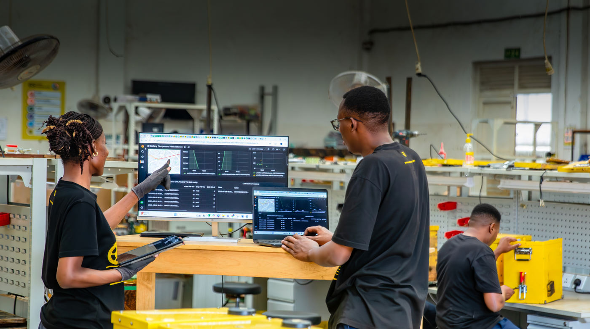

98.9%
Of 17,851 packs still in service
Up to 42 months of history
Our first in-house vehicle control unit went into production in 2019. Since then we have designed our own battery management system (BMS), our own vehicle control and telematics unit (VCTU) and our own station unit. They extend the life of every pack and give us full control of it.

Yellow layers are designed by Ampersand. Our software runs every layer.
Fleet, battery and station platform. Battery health, remote immobilisation, OTA configuration, ROI views.
In-houseVehicle control and telematics, inside the pack: 4G, GPS, BLE, CAN, humidity, temperature and motion sensing, local logging.
In-houseAmpersand BMS (A-BMS), in every MK2 and retrofitted to HM1: balancing, protection, dynamic current limits, state of health.
In-houseHM1: 24-cell module built in-house in Kigali. MK2: our design and BMS, assembled by a contract manufacturer.
In-house designStation control and telematics unit. Measures station energy, now at 12 stations.
In-houseAutomated 12-slot swap cabinet, built to our specification. Our CAN protocol, payments and swap flows.
Partner-built · our specLFP cells from qualified suppliers (EVE in HM1, BYD in MK2). The BMS supports more than one cell type.
Supplieris the heaviest item in an MK2 swap. An HM1 pack weighs 44 kg and needs two hands. An MK2 pack is a one-handed lift.
Source: Ampersand hardware product portfolio, Aug 2026. A weighing test measured 46.45 kg (HM1) and 14.80 kg (MK2 pack). Confirm which figures to publish.
About 3.0 kWh usable. Our workhorse: about 10,215 packs in service.
3.67 kWh per bike. About 30% less battery weight on the bike, and each pack can be swapped alone.
cell-voltage accuracy. The BMS sets its current limits from charge, temperature, current and state of health, second by second.
HM1 started on a third-party BMS. In 2023 our electronics team launched the Ampersand BMS as a drop-in replacement. It is built into every MK2 and retrofitted to HM1. We control every limit and every firmware release.
Sources: BMS specification (2024), BMS firmware 2.2.0 validation, hardware product portfolio (Aug 2026).
sensors and radios in one Ampersand unit, mounted inside the pack. Our first vehicle control unit was in production in 2019.
| Data, while driving | Every |
|---|---|
| GPS position | 1 s |
| Cell voltages | 1 s |
| Charge and health | 1 s |
| Motor and inverter data | 1 s |
| Cell temperatures | 5 s |
| Pack humidity and temperature | 1 min |
Sources: VCTU requirements, VCTU hardware and telemetry-rate pages, Q3 2026 roadmap. Rates are lower when the bike is parked.
Each design uses data from the packs that came before it.
Proof of concept
First commercial packs
First HM platform
Field updates
Today's HM1 fleet
Twin-pack, in-house BMS
In development
The MK2 vibration test is equal to about 5 years and 75,000 km of riding. HM1 and MK2 packs are UN38.3 certified. We test to ISO 18243.
| MK2 test | Result |
|---|---|
| Vibration (UN38.3 §38.3.4.3) | Passed |
| Mechanical shock | Passed |
| Thermal shock | Passed |
| External short circuit | Passed |
| Over-discharge | Passed |
| Over-temperature | Passed |
Water and drop results are left out on purpose. See the items to confirm.
A lender can see the health of every pack, every day. Because we own the BMS and the VCTU, we can change how a pack charges and discharges from AmperOps, and we can immobilise a vehicle remotely.